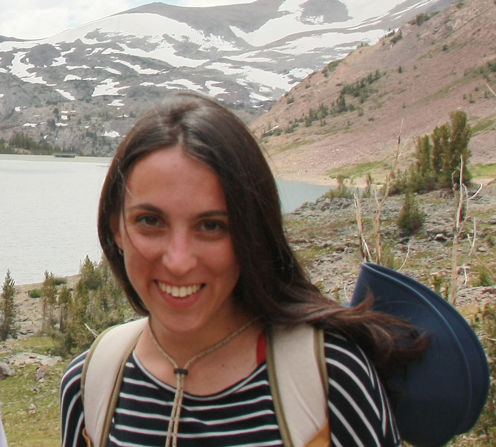

I am a Post-doctoral Fellow at the NSF-Simons National Institute for Theory and Mathematics in Biology of Chicago. My interests sit at the interface of statistical physics and biology: using a combination of analytical and numerical approaches, I develop theoretical models and data-analysis methods to understand how functional properties emerge in biological systems.
I am currently working on population dynamics problems inspired by affinity maturation and protein evolution with Arvind Murugan and Rama Ranganathan at UChicago.